Keep the
good part.
Brand invitation, publication covers and quiet environmental presence.
The AFTERFORM identity, from its smallest label to its largest invitation. A working system for the clothes people keep.
The established typographic mark remains the anchor. New lockups explain the service; a compact signature and a simple joining symbol handle smaller contexts.

A name, a visible change and a useful record. These three ideas organise the identity even when the logo is absent.
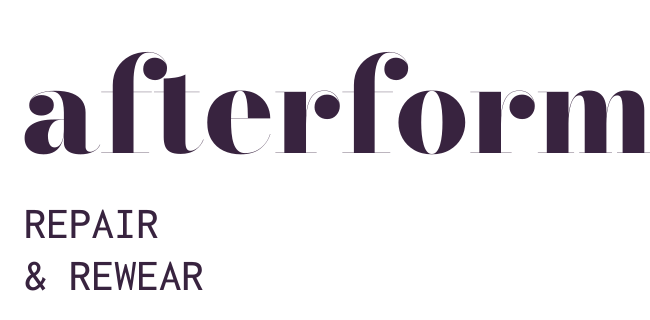
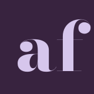
The master uses licensed Bodoni Moda outlines with a modest, consistent tracking adjustment. The letterforms are not presented as a custom typeface. The selected setting preserves the fluid reading of “afterform”; the earlier split construction remains in the exploration archive.
Fine display letterforms lose clarity at favicon scale. The micro mark retains only the functional joining idea. It is used where the full brand name is already available in the page title or surrounding interface.

Primary wordmark at its digital minimum target.
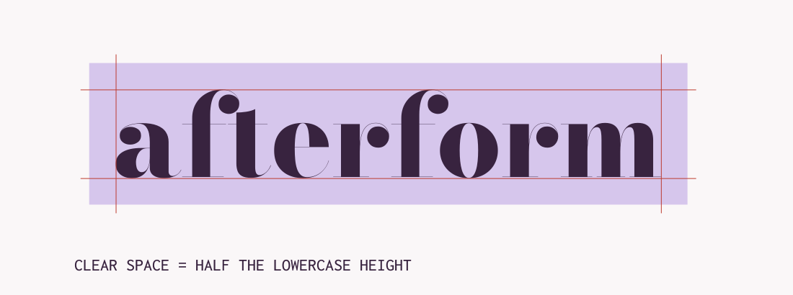
| Rule | Application |
|---|---|
| Clear space | At least 0.5 × lowercase height outside the visible outline; exported SVG padding is not the measurement. |
| Minimum target | Primary: 144 px / 35 mm. Service lockup: 220 px / 50 mm. Compact: 32 px. Micro symbol: 16–32 px. Actual-size proofs remain necessary. |
| Background | Plum on poplin or lilac. Lilac on plum. Solid black for one-colour applications. |
| Do not | Distort proportions, add shadows, outline the lettering, use a photo fill or run fine red lettering over lilac. |
Brand invitation, publication covers and quiet environmental presence.
Forms, records and information-heavy pages. Primary contrast: 13.32:1.
One expressive moment. Essential text contrast: 5.15:1.
Display text establishes the emotional premise. Karla carries labels, directions and decisions. Codes always sit beside plain language. Body copy is constrained to a comfortable measure, typically 45–70 characters.
Print body targets 11/16 pt; essential tag information targets at least 9/12 pt. The system does not force digital instructions into 8 px microcopy. Sign dimensions, mounting and letter height require a real-distance proof.
| Token | Value | Behaviour |
|---|---|---|
| Deep plum | #38233F | Primary text, identity and dark surfaces. |
| Vermilion | #BD3B2F | One emphasis or a changed-scope cue, with an explicit label. |
| Lilac | #D6C6EC | Supporting field, selected state and editorial relief. |
| Poplin | #FAF7F8 | Primary reading background; white #FFFFFF for forms. |
| Secondary text | #6B586F | 6.07:1 on poplin. |
| Success | #2B614C | 6.76:1 on poplin, always paired with text. |
| Category | Words + M/F/A/Q codes | No additional category colours. A repair code is not a status. |
A stable garment ID and a familiar name establish which piece is under discussion.
A joining line, a material crop or a marked revision makes the relevant change visible. Decorative coordinates and fake barcodes have no role.
A short information rail carries the repair type, version or action. It works in a label, a form and a publication margin.
A quiet label can omit imagery. A campaign can omit the code. The grammar is a hierarchy of meaning, not a requirement to fill every corner.
Try the operational states, monochrome treatment and a longer description. The system expands the format before it compromises essential type.
These are illustrative workflow states. They do not certify quality or record a real agreement.
Work label · 90 × 65 mm
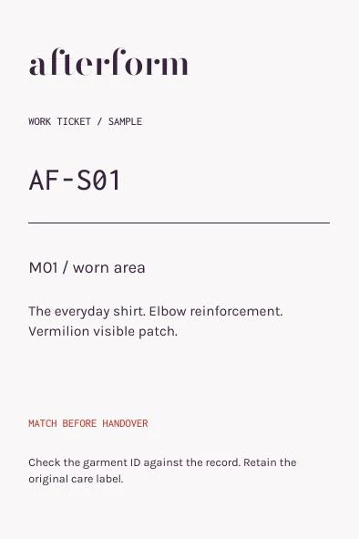

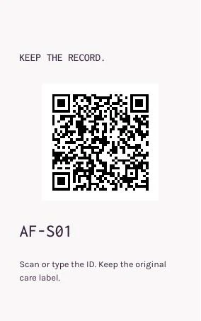


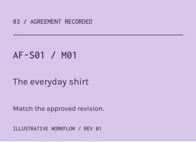
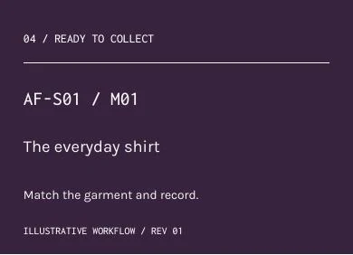


The tag and seal attach to removable service packaging, not directly to delicate cloth. Materials, adhesive and hole strength need physical proofing. No fibre composition, care symbol, certification or barcode is invented.
Inspect all twelve service pieces ↗24 px construction grid. 1.75 px strokes. Square ends and deliberate corners. The new print, label, revise and garment pictograms extend the established family. The garment pictogram is a general navigation cue, not a diagnosis diagram.
Text labels remain visible. Interface icons are decorative to screen readers when adjacent copy supplies the name. At environmental scale, the destination name remains primary; a small brand symbol never substitutes for a direction.
Twenty-four pages, four chapters. Invitation gives way to explanation, comparison and a useful takeaway. The twelve-page first edition remains in the archive.


The proposed saddle-stitched object uses 16 mm margins, a two-column underlying grid and a 6 mm spacing rhythm. Not every page exposes the grid. Large editorial openings give practical index and comparison pages room to breathe.
Inside cover, contents, opening, image-led spread, finish comparison, taxonomy, request, proposal, decision, record, care boundaries, checklist, colophon and back cover. A readable HTML edition accompanies the visual pages.

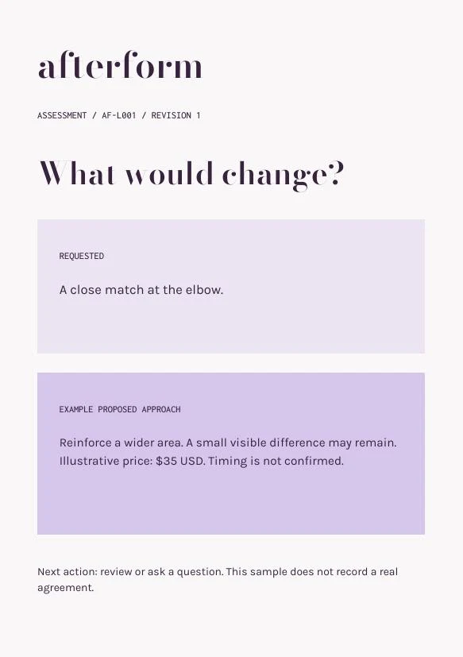
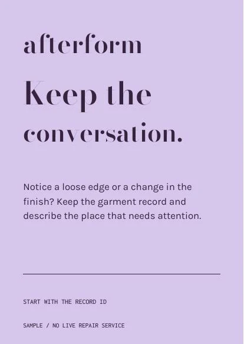
The intake form, comparison sheet and work ticket use the same hierarchy as the interface. They make a service conversation easier to have, with enough space to read the information without scanning an ornamental layout.
The printable product brief is generated from the saved request. It has no fabricated signature, barcode or public link. A browser-local request cannot truthfully behave like a shared online record.


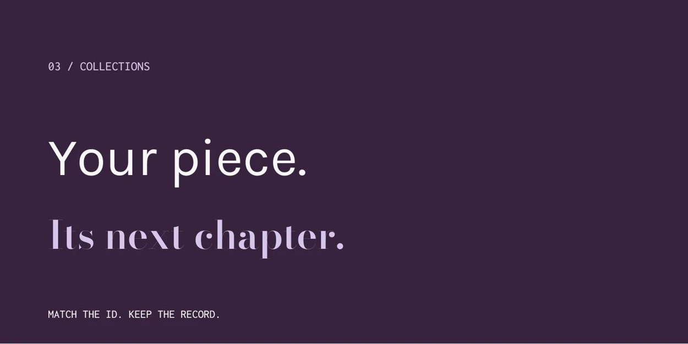
The window is an invitation. The directory names destinations. The counter sign makes asking a question feel normal. The collection sign ends with the same action as the digital record: match the ID and keep the useful details.
These are dimensioned environmental studies, not installed signs. Arrows, mounting, glare and accessibility requirements need a real location. No fictional address, opening hours, floor plan or code-compliance claim is added.
The existing five-poster campaign stays. Six new digital masters extend the system by purpose: invite, explain, guide, identify and bring someone back.
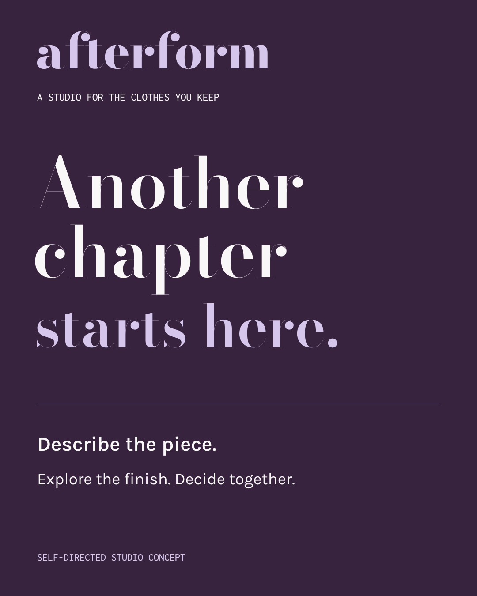


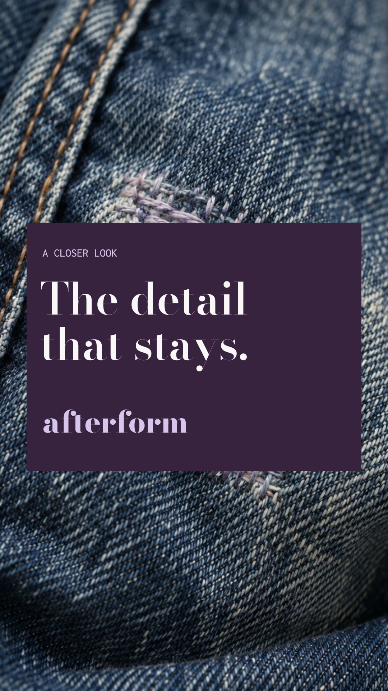
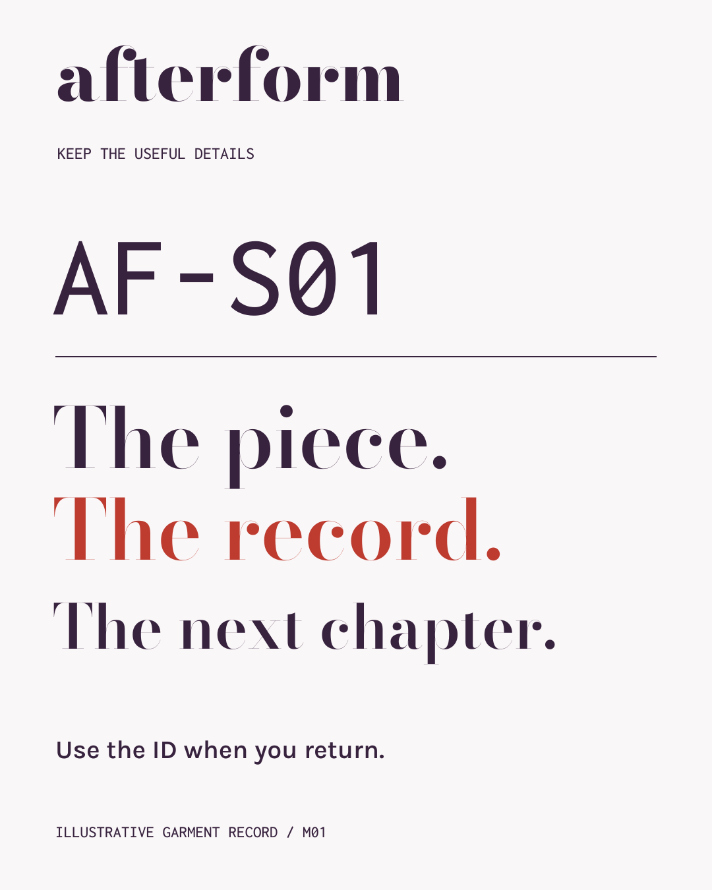
Story layouts protect top and bottom interface areas. The reel-cover title sits inside the central square crop. Information cards use a sequence rather than a resized poster. All type is authored as vector outlines.
The existing service email remains deliberately quiet: the next useful action is reviewing a proposal. No launch date, event, offer or business claim has been fabricated to fill a template.
A still composition until you choose to play.
A single 1.2-second identity demonstration connects two ideas, then stops. Everyday UI feedback is shorter: 160 ms for border or colour; 280 ms for a joining-rule reveal.
Reduced motion displays the completed frame immediately. Form errors and status messages never wait for an animation.
The source contains font licences, editable HTML/CSS/JavaScript, dimensioned PDF authoring code, local images and all SVG masters. The downloadable artwork is a design handoff, not a production certification.
Physical samples, printer profiles, QR destinations and accessibility in a real setting still need validation. The portfolio remains honest about what is designed and what has been tested.
{kind=link}
{kind=link}
{kind=link}
{kind=link}
{kind=link}
{kind=link}
{kind=link}
{kind=link}
{kind=link}
{kind=link}
{kind=link}
{kind=link}
{kind=link}